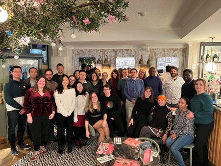

Oxinfer
Oxford distributed analytics for network research group (oxinfer) is a research group at the University of Oxford with three key purposes:
Oxinfer is part of the wider Health Data Sciences section (lead by Prof. Daniel Prieto-Alhambra)
Welcome to the team! Below is some useful information and links about getting help with certain aspects of your role. You can check out our website where you can put names to faces [here].
https://www.ndorms.ox.ac.uk/team/edward-burn

The Oxinfer team
- scope of the team … TBC
Members
Ed Burn
Senior Researcher in Epidemiology and Health Economics
My research is focused on using routinely collected health care data to inform medical decision making. With careful curation and analysis, the data from millions of routinely recorded health care interactions can be used to generate evidence on patient prognosis and the safety, effectiveness, and cost-effectiveness of medicines and procedures.
The foundation of my current research is the use of a common data model to transform disparate sources of health care data into a standard format. This then allows for data analyses to be performed across a distributed network of data partners, with only analytic code and aggregated results sets shared between sites. This approach has already facilitated a number of network studies, ranging from a comparison of alternative approaches to knee replacement in the UK and US to an early description of the people being hospitalised with COVID-19 in the US, South Korea, and Spain.
I have been contributing to the European Health Data & Evidence Network (EHDEN) project and am an active member of the Observational Health Data Sciences and Informatics (OHDSI) network. More recently, I have been leading analyses for projects funded by the European Medicines Agency to assess outcomes among patients with COVID-19 and to evaluate the safety of COVID-19 vaccines.
Martí Català Sabaté
Medical Statistician/Data Scientist
I am a postdoctoral data scientist using routinely collected health data to generate reliable evidence for improved patient care. I work within the Pharmaco- and Device Epidemiology group at the Centre for Statistics in Medicine (CSM).
My research focuses on generating evidence on the safety, effectiveness, and cost-effectiveness of medicines and procedures. To do so, I develop R packages and code to curate and analyse the data from millions of routinely recorded health care interactions. We use a common data model developed by the OHDSI community to transform disparate sources of healthcare data, into a standard format. Our data partners across Europe and the world all transform their data into this format. We can then perform data analyses across all these datasets, sharing only analytic code and aggregated results between sites. This approach allows us to safely combine data and generate more generalisable answers to research questions than if we were restricted to single datasets.
I also contribute to the DARWIN EU project as a programmer and study leader. This European Medicines Agency project will deliver real-world evidence from across Europe on diseases, populations, and the use and performance of medicines.
Before joining CSM, I completed my PhD thesis in Computational and Applied Physics at Universitat Politècnica de Catalunya in Barcelona. There I built computational models to understand the natural history of tuberculosis. I also built computational models to predict the evolution of the COVID-19 pandemic, which were used by the Catalan authorities and European Commission (DG-Connect).
Danielle Newby
Senior Postdoctoral Researcher in Real World Evidence
I joined NDORMS in April 2022 from the Department of Psychiatry where I led projects related to drug repurposing and understanding risk factors of dementia as well as other mental health and neurological conditions. I have a multidisciplinary background in epidemiology, pharmacology, and machine learning. My complete publication list can be found here.
My main research interests involve triangulating real world evidence from multiple sources such as medical records and genetic data to understand more about what causes certain diseases, how they have changed over time and what we can do to intervene with new or existing interventions and the safety of these interventions.
Specific areas of interest and expertise:
- Descriptive epidemiology for oncology
- Federated network studies for cancer survival
- Signal detection for drug safety
- Drug target Mendelian randomization
Mike Du
Postdoctoral Researcher in Health Data Sciences
Yuchen Guo
Postdoctoral Researcher in Health Data Sciences
Theresa Burkard
Postdoctoral Data Scientist
I joined NDORMS in October 2022 as an Epidemiologist and Postdoctoral Data Scientist. My main research interest is observational research on the topic of musculoskeletal diseases with a focus on autoimmune rheumatic diseases.
In this current position, I developed a perinatal extension table diagnostics R package for the European Health Data & Evidence Network (EHDEN) and further diagnostics packages will follow for DARWIN EU CC.
Prior to my current position, I worked as a Postdoctoral researcher at ETH Zurich where I used the Swiss Rheumatology registry for my research on rheumatoid arthritis and osteoarthritis and did a research visit at Karolinska Institute in Stockholm using Swedish nationwide registries to assess various (musculoskeletal) outcomes following bariatric surgery.
I obtained a pharmacist degree in Switzerland in 2012 and worked as a community pharmacist and in a pharmaceutical company until 2015, when I joined the Basel PharmacoEpidemiologyUnit for my PhD training.
ORCID: 0000-0003-1313-4473
Xihang Chen
Research Assistant in Health Data Sciences
I am a Research Assistant in Health Data Science at University of Oxford, the projects that I am currently working on include EHDEN Parkinsonism study and UCB Re-fracture study. My key responsibility is to programme and design analytical pipelines in R to answer healthcare research questions. Before that I have completed my Master’s degree in Mathematics from University of Oxford.
Kim Lopez Guell
DPhil student
I am a DPhil student working on leveraging real world data to characterise the long-term impact of COVID-19. I use routinely collected primary care health data mapped to a common data model which allows me to work with other partners across the world to produce better evidence. I work on profiling, phenotyping and also applying different statistical models and analyses to study COVID-19, in particular its long-term effects. I am specially interested in causal inference and machine learning techniques, and I am very keen on applying mathematical and statistical methods in medical science.
Before joining the Centre for Statistics in Medicine, I graduated from Mathematics and from Physics at the Universitat Autònoma de Barcelona (UAB). I then moved to Oxford to study an MSc in Mathematical Sciences, where I took mainly Statistics courses and wrote my Dissertation on The impact of COVID-19 passport mandates on the number of cases of and hospitalisations with COVID-19 in the UK: a difference-in-differences analysis.
In my spare time I love to read, do all kinds of sports and spend time with my friends. Nature is one of the things that makes me happier.
Pablo Spivakovsky Gonzalez
Research Assistant in Health Data Sciences
Marta Alcalde-Herraiz
Research Assistant in Data Science and Pharmacogenomics
Nuria Mercade Besora
Research Assistant in Health Data Sciences
Elin Rowlands
Research Assistant in Health Data Sciences